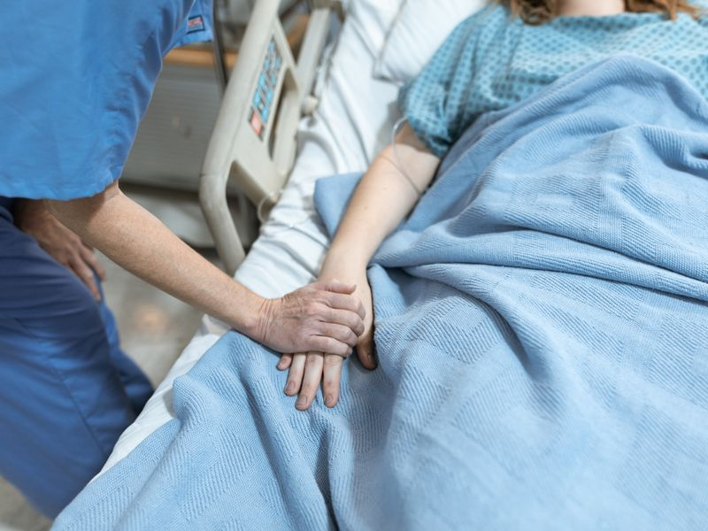

About Us
Meet the team behind DISHA Advanced Surgical & Laser Piles Clinic: experienced surgeons committed to safe, compassionate care.
Compassion, skill and trust in every procedure
DISHA Advanced Surgical & Laser Piles Clinic in Kharadi, Pune, specialises in advanced laser and laparoscopic care for piles, fissures, fistulas, hernias, gallstones and varicose veins, alongside comprehensive GI diagnostics and oncology surgery. The clinic was founded on 20 October 2026 by Dr. Abhijeet Suresh Shinde, a General & Laparoscopic Surgeon and Consultant Proctologist, with a simple belief: surgery should be safe, transparent and humane.
We believe the patient should always understand their diagnosis, options and recovery plan before agreeing to surgery. That is why Dr. Shinde personally examines, operates and follows up on every case, so nothing is lost between handovers. We follow strict hygiene protocols, keep every consultation private, and give honest opinions, including a second opinion without pressure when you want one.
Book AppointmentDr. Abhijeet Suresh Shinde
MS (General Surgery) | DEMS | DIHM
Dr. Abhijeet Suresh Shinde is an experienced surgeon with over 10+ years of clinical and surgical experience, having successfully treated more than 3,500+ patients. His expertise includes General Surgery, Laparoscopic Surgery and Advanced Proctology, with a special focus on piles, fissures, fistulas and other anorectal disorders.
- General & Laparoscopic Surgeon
- Consultant Proctologist (piles, fissure, fistula)
- Diploma in Laser Proctology, Healing Hands Clinic training
Dr. Abhijeet Suresh Shinde: education & expertise
MS (General Surgery) | DEMS | DIHM. Specialised training in emergency care, industrial health and laser proctology.
MS (General Surgery)
Master of Surgery in General Surgery
DEMS
Diploma in Emergency Medical Services, Ruby Hall Clinic, Pune
DIHM
Diploma in Industrial Health Management, Ruby Hall Clinic, Pune
Diploma in Laser Proctology
Advanced laser techniques for piles, fissure and fistula
Healing Hands Clinic, Pune
Specialised proctology training
What drives us
Our Mission
To deliver safe, ethical and affordable surgical care with compassion, clear communication and the best available technology.
Our Vision
To be the most trusted laser and surgical piles clinic in the region, known for honest advice, excellent outcomes and a patient experience that feels like family.
Reasons patients trust us
Specialist Surgeon
Dr. Shinde is a general & laparoscopic surgeon and consultant proctologist.
Laser & Modern Techniques
Advanced laser, stapler and keyhole options chosen to suit you.
Honest Advice
A clear opinion on whether you need surgery, with no pressure.
Private & Respectful
Discreet consultations in a comfortable, judgement-free setting.
Convenient Timing
Open daily from 10 AM to 9 PM for easy appointments.
Same Surgeon, Start to Finish
The surgeon who examines you operates and follows up your recovery.
What to expect when you visit
A simple, comfortable path from first call to full recovery.
Call or Book
Call, WhatsApp or book online. Open daily 10 AM to 9 PM.
Private Consultation
A gentle, private examination and a clear explanation.
Treatment Plan
The simplest effective option, with laser or surgery only when needed.
Recovery & Follow-up
Aftercare guidance and follow-up with the same surgeon.
A calm, modern environment



Need a surgical consultation?
Talk to our surgeon today. Honest advice, no pressure.